Results
All numbers below are read from the figures and logs in the repository; nothing here was re-tuned for this page.
The posteriors are accurate where the data are informative
For SIR (6000 simulations, 100 epochs), recovery is close to perfect for the infection rate λ (r = 0.98), good for ψ (0.86) and I₀ (0.74), and weak for the recovery rate μ (0.18) and the reporting delay D (0.41): with a 60-day window of noisy case counts these two are only weakly identified, and their posteriors correctly stay wide. The SBC rank histograms stay inside the grey confidence band, consistent with a calibrated posterior. For the GRF, both parameters are recovered almost exactly (r = 0.999 and 0.993) and the ECDF calibration curves stay inside the 95% band.

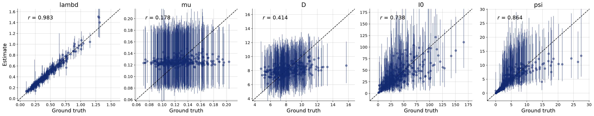

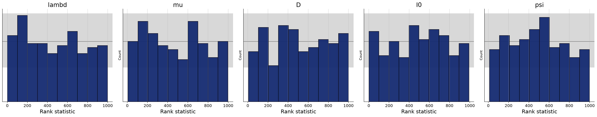

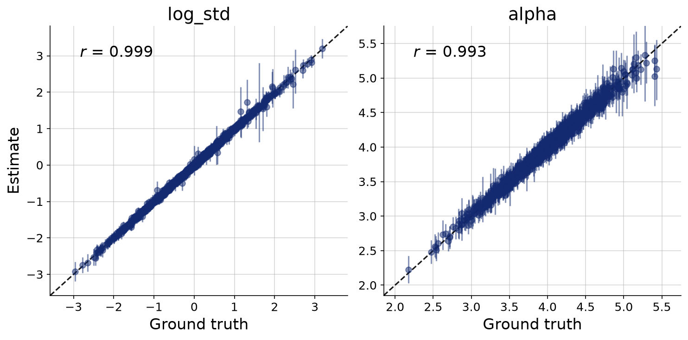

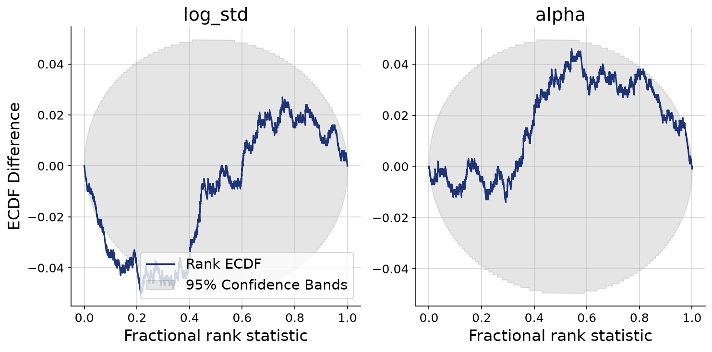

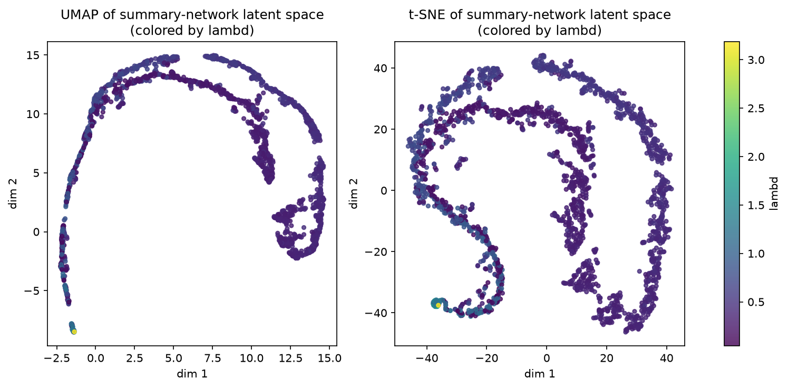

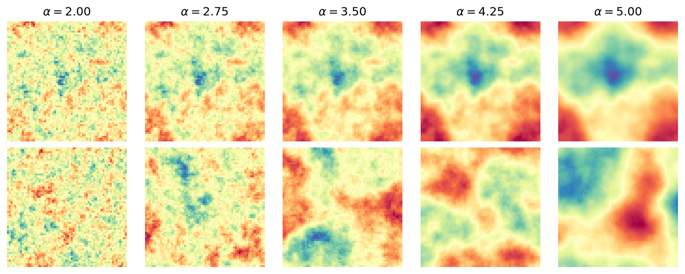
Sanity check: attributions recover the known ground truth
In this toy signal θ₀ is, by construction, the amplitude of channel X1 only. A GRU surrogate (R² = 0.98 for θ₀ on held-out data) explained with Integrated Gradients puts the largest total attribution on X1 in 188 of 200 validation samples. The most important interior time steps cluster at steps 3–6 and 13–17, around the extrema of the sine where the amplitude is easiest to read.

SIR: the methods do not agree on which channel matters
The SIR surrogate (GRU on the full S, I, R trajectories) only learns λ well (held-out R² = 0.90; R² ≤ 0.03 for μ, D, I₀, ψ), so all SIR explanations target λ.
| Method | Channel ranking for λ | Where in time |
|---|---|---|
| Integrated Gradients (zero baseline, 200 samples) | S ≫ R > I (0.39 / 0.06 / 0.02) | days 0–3 and 50–58 |
| IG statistics (50 samples) | S dominant in 48 / 50 | interior top-5 at days 1–2, 17–25, 54–59 |
| Saliency Map | R > S ≫ I (0.16 / 0.13 / 0.03) | — |
| Masking (per time step) | — (all channels masked together) | rises toward the last day; small bump at days 1–4 |
| Attention Rollout (Transformer) | — (time only) | days 49–53 and the last day |
(1) Endpoint effect: the GRU surrogates read out only the last hidden state, so the final time step reaches the output through one update and dominates |attribution| almost by construction; this is why the statistics exclude both endpoints, and why Masking peaks at the last step. (2) Baseline effect: IG multiplies the gradient by (x − baseline). With a zero baseline, S (≈ 1 for most of the window) gets a large factor while I (a few percent) gets a small one. Saliency, which has no such factor, ranks R first. The S-dominance under IG is therefore at least partly a property of the baseline, not only of the model.

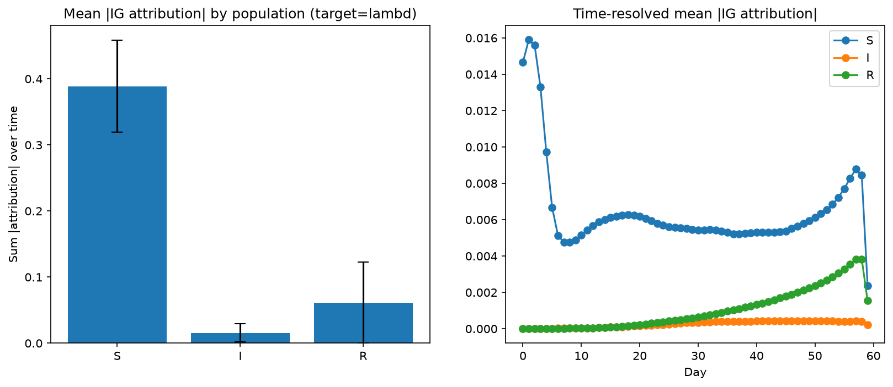

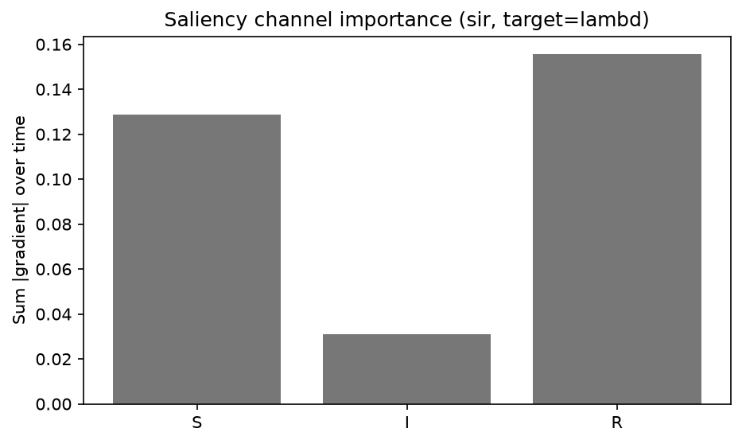

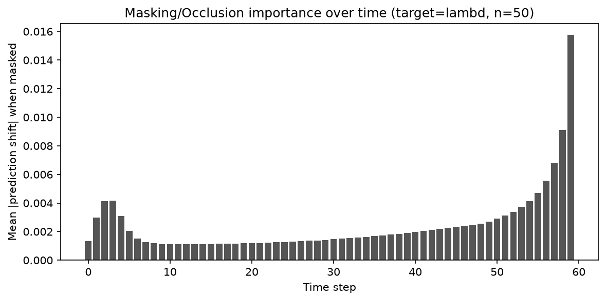

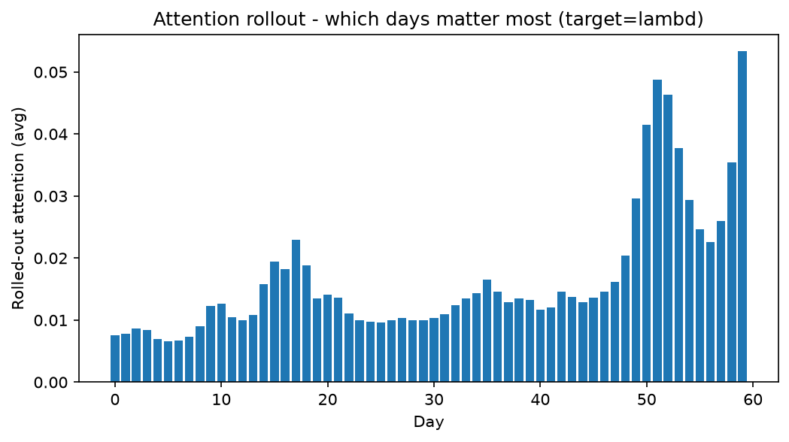

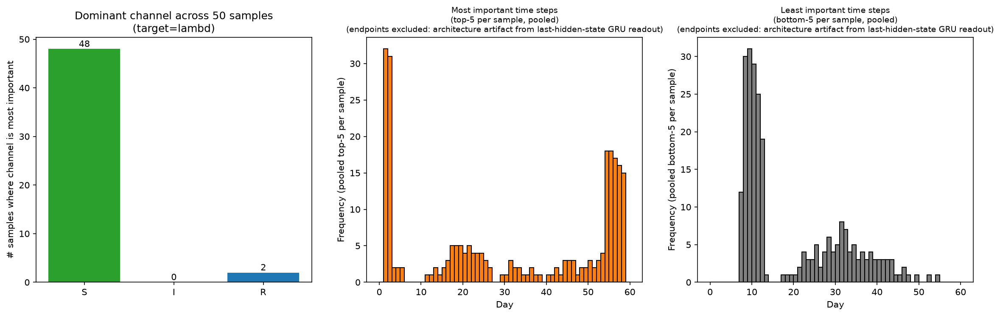

GRF: attribution is spread over the field, low at the border
α controls the spatial correlation of the whole field, so no single region should carry it, and the mean attribution maps are indeed diffuse. Both gradient methods show a dark frame of about 3–5 pixels, which is consistent with the zero padding of the 3×3 convolutions (border pixels feed fewer receptive fields). Masking 8×8 patches gives a coarser map with the same low-importance border column on the left and right. These maps describe a CNN surrogate trained for 30 epochs on 2000 fields.

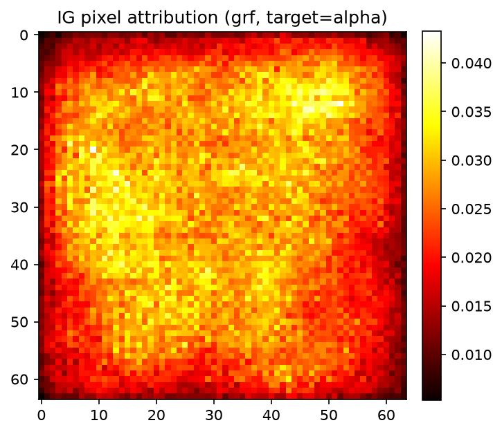

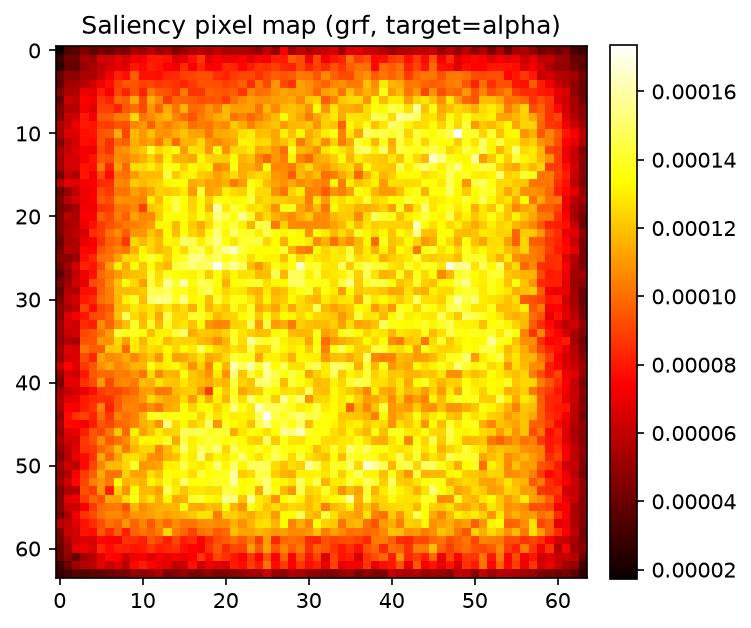

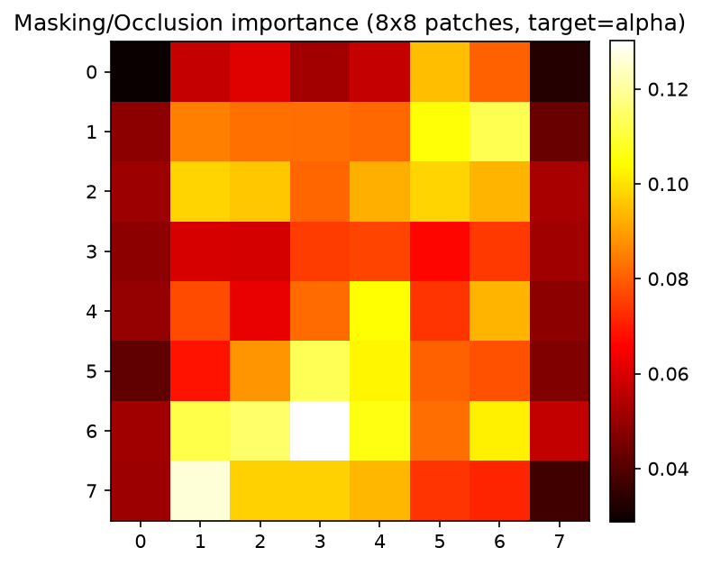
Try it: what α does to a field
A 64×64 field drawn in your browser with the same power spectrum P(k) ∝ k−α as the simulator (Spectral colour map). Larger α moves power to low frequencies, giving smoother, larger blobs.
Gravitational wave: IG exposes a non-physical whitening artefact
Same simulated data (5000 simulations, data seed 0), same PaperEmbedding CNN, same 40 epochs; only the input normalisation differs. IG uses the zero-strain level as baseline and 200 steps; statistics over 64 validation samples, time relative to the H1 merger.
| Input normalisation | Val. MSE | IG peak | Samples peaking within ±50 ms of merger | IG share in last 0.2 s |
|---|---|---|---|---|
| min-max (original) | 9.27 | −212 ms | 0% | 20% |
| z-score | 1.41 | −4.9 ms | 100% | 40% |

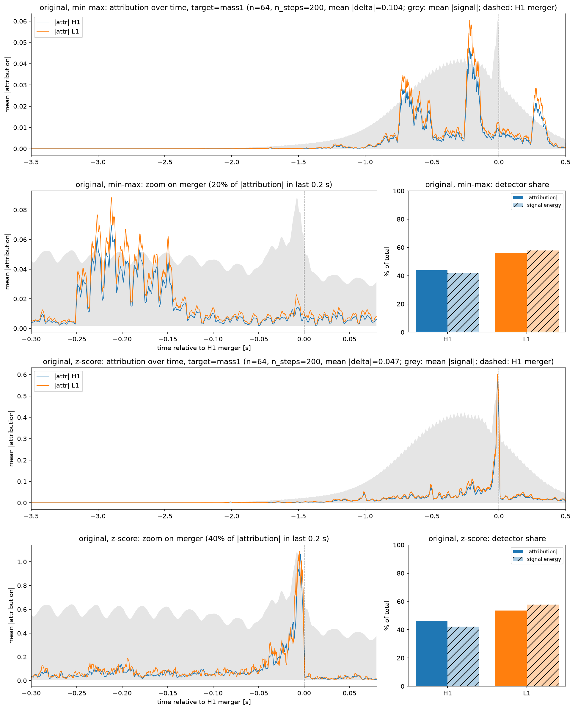
PyCBC starts the waveform below 20 Hz, but the noise PSD has no power there, so whiten()
(which estimates the PSD from the data) amplifies the sub-20 Hz inspiral by about four orders of magnitude;
the 20 Hz FIR high-pass removes only ~6× of it. Every sample is dominated by a ~20 Hz bell from
−1.5 s to +0.5 s that continues past the merger, and min-max scaling spends almost the whole [0, 1]
range on it. The simulator is deliberately left unmodified: the artefact is a result of the analysis.

IG vs. Saliency vs. Masking on one model
One z-score model (data seed 42, val. MSE 0.60), the same 64 validation samples for every method. Masking uses 15.6 ms windows per detector.
| Integrated Gradients | Saliency Map | Masking | |
|---|---|---|---|
| Peak of mean attribution | −5.4 ms | −3010 ms | −10.7 ms |
| Samples peaking within ±50 ms of merger | 97% | 25% | 100% |
| Share in last 0.2 s | 46% | 11% | 41% |
| Share in early inspiral (−3.5 to −1 s, ~no signal) | 7.5% | 58% | 7.8% |
| H1 / L1 attribution (signal energy 45 / 55) | 57 / 43 | 60 / 40 | 59 / 41 |
| Rank correlation of time profiles | IG–Masking 0.99 · IG–Saliency 0.47 · Saliency–Masking 0.47 | ||

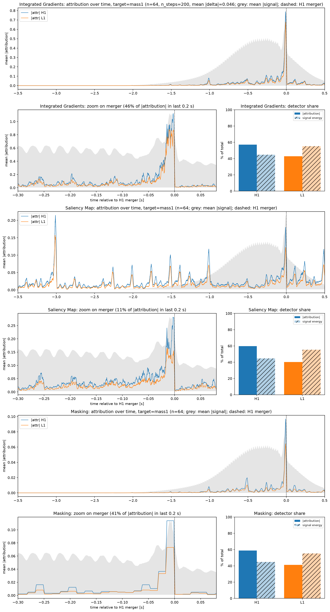
The H1 preference (57–60%) is consistent across methods for this model but not across trainings: an earlier z-score model (data seed 0) had H1/L1 = 46/54, close to its signal energy. The two z-score trainings reached val. MSE 1.41 and 0.60, so single-run numbers should be read with that spread in mind.